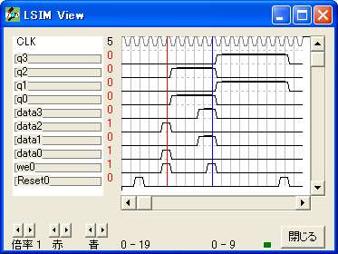

{ =============================================== }
{ 記憶 }
{ =============================================== }
logicname sample
{ =============================================== }
{ 実効譜 }
{ =============================================== }
entity main
input Reset;
input we;
input data[4];
output q[4];
bitr regq[4];
if (Reset)
regq=0;
else
if (we)
regq=data;
else
regq=regq;
endif
endif
q=regq;
ende
{ =============================================== }
{ 機能実行譜 }
{ =============================================== }
entity sim
output Reset;
output we;
output data[4];
output q[4];
input simres;
bitr tc[4];
simres=0;
part main(Reset,we,data,q)
if (!simres) tc=tc+1; endif
switch(tc)
case 1: Reset=1;
case 4: data=5;we=1;
case 8: data=10;
case 9: data=10;we=1;
endswitch
ende
endlogic
library IEEE;
use IEEE.std_logic_1164.all;
entity main is
port(clk : in std_logic;
data0 : in std_logic;
Reset0 : in std_logic;
we0 : in std_logic;
data1 : in std_logic;
data2 : in std_logic;
data3 : in std_logic;
q0 : out std_logic;
q1 : out std_logic;
q2 : out std_logic;
q3 : out std_logic);
end main;
architecture RTL of main is
signal n_n11 : std_logic ;
signal n_n12 : std_logic ;
signal n_n13 : std_logic ;
signal n_n14 : std_logic ;
begin
process(clk) begin
if (clk' event and clk='1') then
n_n11 <= (data0 and not Reset0 and we0) -- 1桁分の記憶
or (n_n11 and not Reset0 and not we0) ;
n_n12 <= (data1 and not Reset0 and we0)
or (n_n12 and not Reset0 and not we0) ;
n_n13 <= (data2 and not Reset0 and we0)
or (n_n13 and not Reset0 and not we0) ;
n_n14 <= (data3 and not Reset0 and we0)
or (n_n14 and not Reset0 and not we0) ;
end if;
end process;
q0 <= (n_n11) ;
q1 <= (n_n12) ;
q2 <= (n_n13) ;
q3 <= (n_n14) ;
end RTL;
